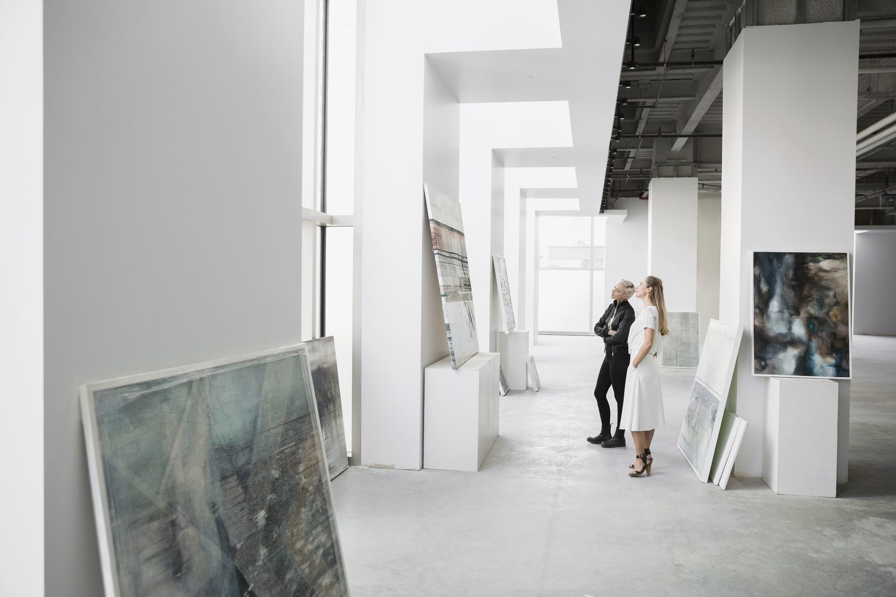

Cursos y formación
Desde la Cátedra Ikerlan-Uniovi se impulsa la realización de cursos de formación para estudiantes y personal investigador de ambas instituciones.
En esta página web podrá encontrar enlaces a los diferentes cursos ofertados.